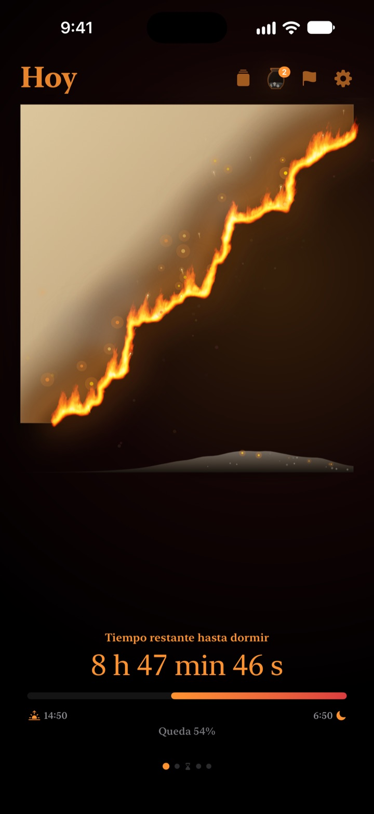
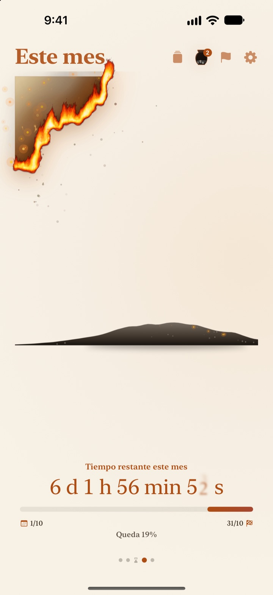
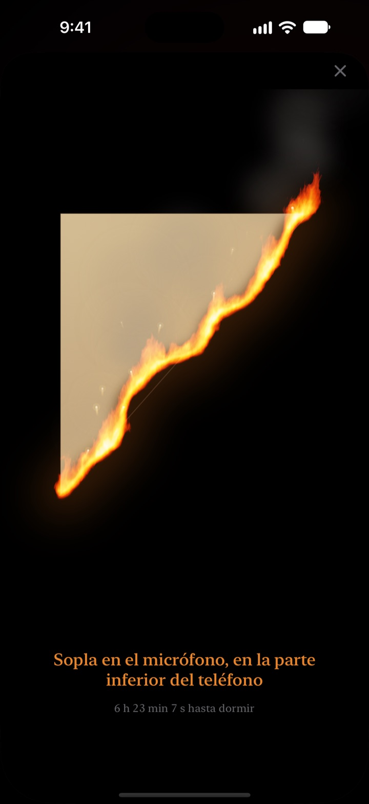
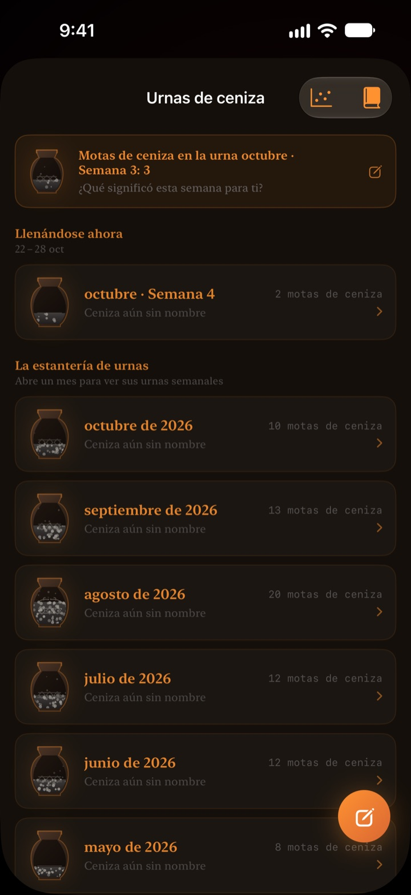

Lo que queda de hoy
arde ante tus ojos
Una tarde que parece inofensiva en cifras se ve muy distinta como un pergamino en llamas. Media hora antes de dormir, sopla sobre la pantalla para apagar el fuego y cerrar el día.
El pergamino en llamas, el ritual de soplar y las reflexiones son gratis.

Pruébalo: sopla y apágalo
Lleva la hora a justo antes de dormir y mantén pulsado el botón o sopla al micrófono.
¿Te ha pasado eso de "¿ya son las doce?"
Cenas, te sientas un rato y el día se ha ido. Los números del reloj se ven igual cada noche, así que no notas cómo se acaba el tiempo. Pergamino en Llamas te muestra lo que queda como un pergamino ardiendo, para que lo notes antes de que la tarde desaparezca.
Tu día, tu semana y tu año, ardiendo
Desde que te levantas hasta la hora de dormir, el pergamino arde poco a poco. También puedes ver lo que queda de esta semana, este mes y este año.
Añade una meta con fecha como fecha límite y la cuenta atrás corre a la vez.

Apaga el día de un soplo
Desde 30 minutos antes de dormir, sopla sobre el pergamino para apagar el fuego. Solo se usa la fuerza de tu soplo y no se graba nada.
El fragmento que queda se guarda. Dale la vuelta y escribe en el reverso una línea sobre tu día.

El tiempo que pasó se queda en ceniza
Repasa el día con una reflexión de una línea y colócala como un punto en un gráfico de dos ejes según cómo usaste ese tiempo. Las reflexiones se acumulan en urnas de ceniza semanales y mensuales, y puedes releerlas en el Libro de reflexiones.
El Flujo de ceniza te enseña adónde se fue el tiempo con un gráfico de distribución y un calendario de brasas.

Empieza en tres pasos
- 1
Elige tus horas
Toca el engranaje de arriba a la derecha. El pergamino se enciende y se apaga según ese horario.
- 2
Elige el periodo
Desliza entre día, semana, mes y año, u oculta en Ajustes las páginas que no necesites.
- 3
Añade un widget
En la pantalla de inicio o la pantalla bloqueada verás el tiempo que queda sin abrir la app.
Dónde ver el tiempo que queda
- Día
- Desde que te levantas hasta la hora de dormir
- Semana · Mes · Año
- Lo que queda de esta semana, este mes y este año
- Tiempo libre
- El pergamino de la semana solo arde durante las horas que reservas para ti (Pro)
- Fechas límite
- Tiempo que queda hasta la fecha de una meta. Una es gratis
- Widgets de inicio
- Pergamino del día en tamaño pequeño, mediano y grande. Semana, mes, año y fechas límite en pequeño y mediano
- Widgets de pantalla bloqueada
- Circular, rectangular y en línea
- Dynamic Island · Actividad en vivo
- Desde una hora antes de dormir o todo el día. Elígelo o desactívalo en Ajustes
Expande la Dynamic Island para ver el pergamino en llamas con la cuenta atrás completa.
El pergamino es gratis. Pro guarda más.
Gratis
- Pergaminos de día, semana, mes y año
- Soplar para apagar la llama y guardar fragmentos
- Reflexiones de una línea, urnas de ceniza y Libro de reflexiones
- Revisión matutina, con datos de sueño de Salud si quieres
- Widgets de inicio y de pantalla bloqueada, Dynamic Island
- Una fecha límite
Pergamino en Llamas Pro
- Quemar solo tu tiempo libre
- Temas: Hanji a la luz de la luna, Celadón, Atardecer
- Llamas: Incendio, Brasas, Chispas
- Compartir tus fragmentos como tarjetas y pósters
- Exportar el Libro de reflexiones en PDF
- Doce meses de Flujo de ceniza
- Fechas límite ilimitadas
No es una suscripción. Pagas una vez y es tuyo para siempre, con todas las funciones Pro que lleguen después.
¿Dispositivo nuevo? Toca Restaurar compras en Ajustes.
Preguntas frecuentes
El widget muestra otra hora que la app.
iOS no redibuja los widgets de inicio cada segundo. Al abrir la app se sincronizan. Para una cuenta atrás que avanza segundo a segundo, usa la Dynamic Island y la Actividad en vivo de la pantalla bloqueada.
Soplo y el fuego no se apaga.
Solo se puede apagar desde 30 minutos antes de dormir. Comprueba que has permitido el acceso al micrófono y sopla de forma continua, cerca del micrófono de la parte inferior del iPhone, durante un segundo más o menos. Un ruido corto no basta.
¿Se graba mi voz?
No. Solo comprueba la fuerza del soplo. No se graba ni se guarda ningún sonido.
¿Qué muestra mientras duermo?
Pasada la hora de dormir aparece un corazón en llamas que muestra cuánto llevas de noche hasta despertar. Por la mañana te pregunta si te acostaste a tu hora y, si fue tarde, el pergamino de hoy empieza chamuscado en esa medida. Si conectas la app Salud, usa la hora en que te dormiste sin preguntarte.
¿Cuándo llegan las notificaciones?
Una hora antes de dormir. Si no te llegan, revisa Ajustes > Notificaciones > Pergamino en Llamas.
¿Gasta mucha batería?
La cuenta atrás dentro de la app avanza cada segundo, pero los widgets se actualizan con un sistema de bajo consumo que gestiona iOS, así que el impacto es pequeño.
¿Dónde se guardan mis datos?
Tus horas, fechas límite, reflexiones y urnas se quedan en tu dispositivo. El desarrollador solo recibe estadísticas de uso anónimas, diagnósticos de errores y los comentarios que decidas enviar. Sin anuncios ni rastreo.
¿Pro es una suscripción?
No. Pagas una vez y lo conservas para siempre. En un dispositivo nuevo, toca Restaurar compras en Ajustes.
Errores, ideas o cualquier otra consulta: escríbenos a leeo@kakao.com.